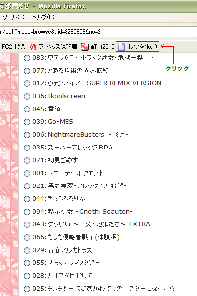
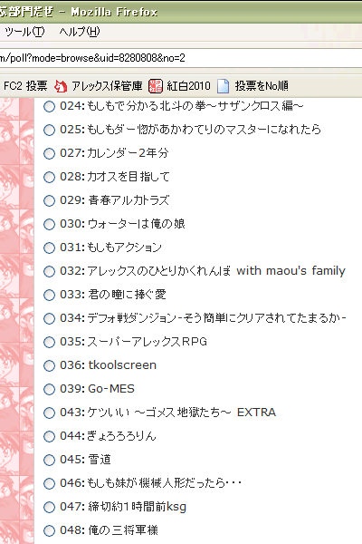

■ほっぷ！ 紹介しよう！ この方法は◆RGSS..WS4M氏に提供していただきました
■すてっぷ！ ブックマークレットを登録しよう！ 他のブラウザは各自で調べてみてね！ ●ここの解説をよく読んでブックマークレットの登録の仕方を確認 ・Internet Explorer ・Firefox ・Safari ●投票をNo順 ←をブクマ！ ●登録完了！
■じゃんぷ！ 使ってみよう！ ●投票画面を開く(並びがバラバラで困ったもんだね！) ●ブクマしたボタンを押す ●整列されるウヒょーーーーー！！！１  


■かーるいす！ 補足しよう！ ●Javascriptが使える環境じゃないと使えないよ！ ●ブラウザ上で項目を並び替えてるだけなので、特に悪さはしないよ！安全だよ！ ●ここ以外で使っても問題ないと思うけど、責任は取らないよ！